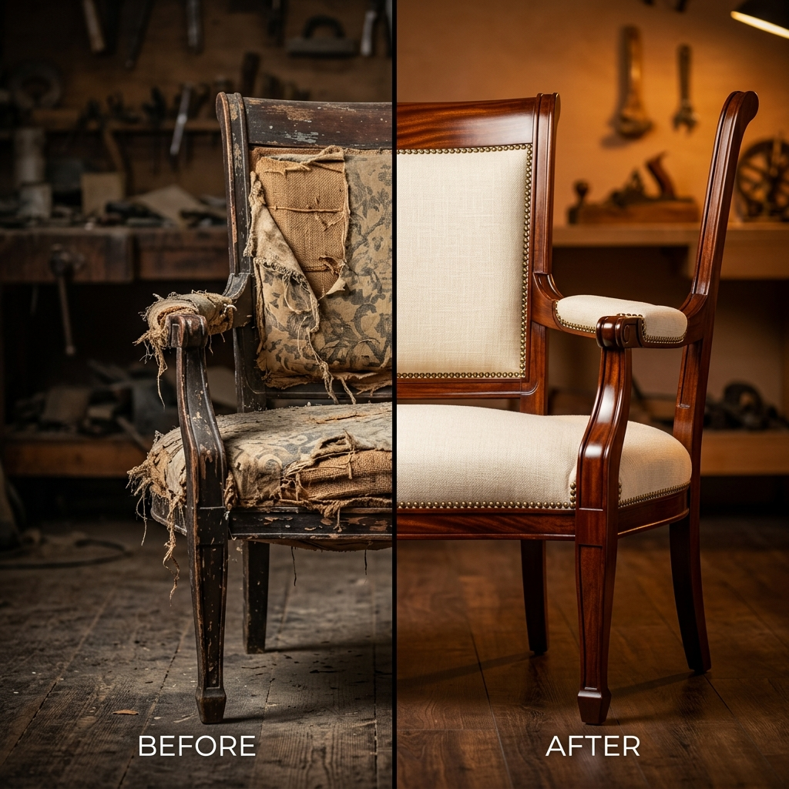
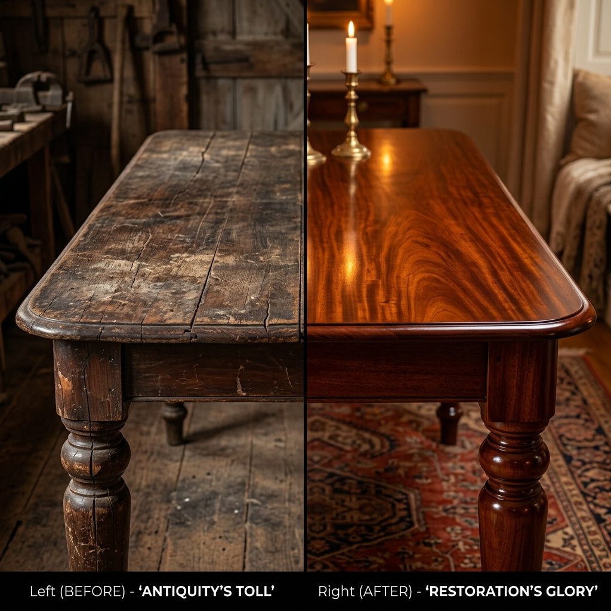
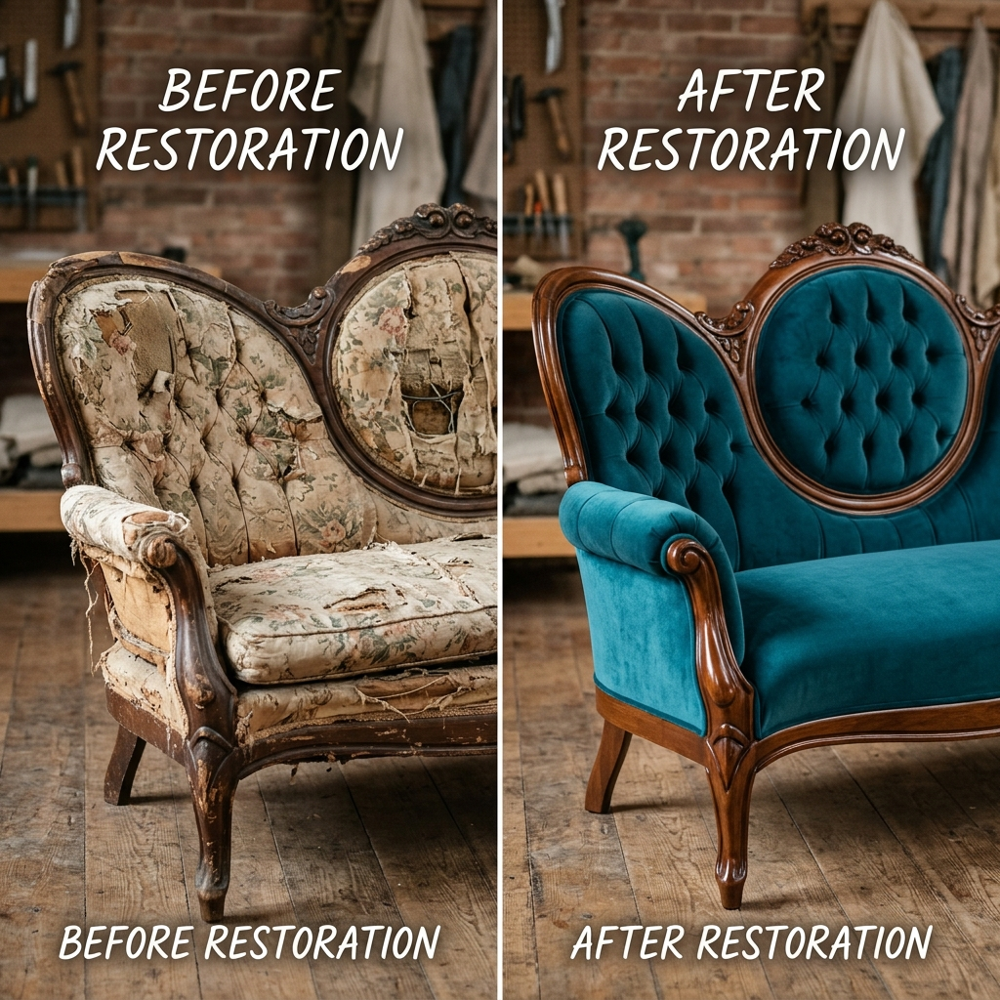
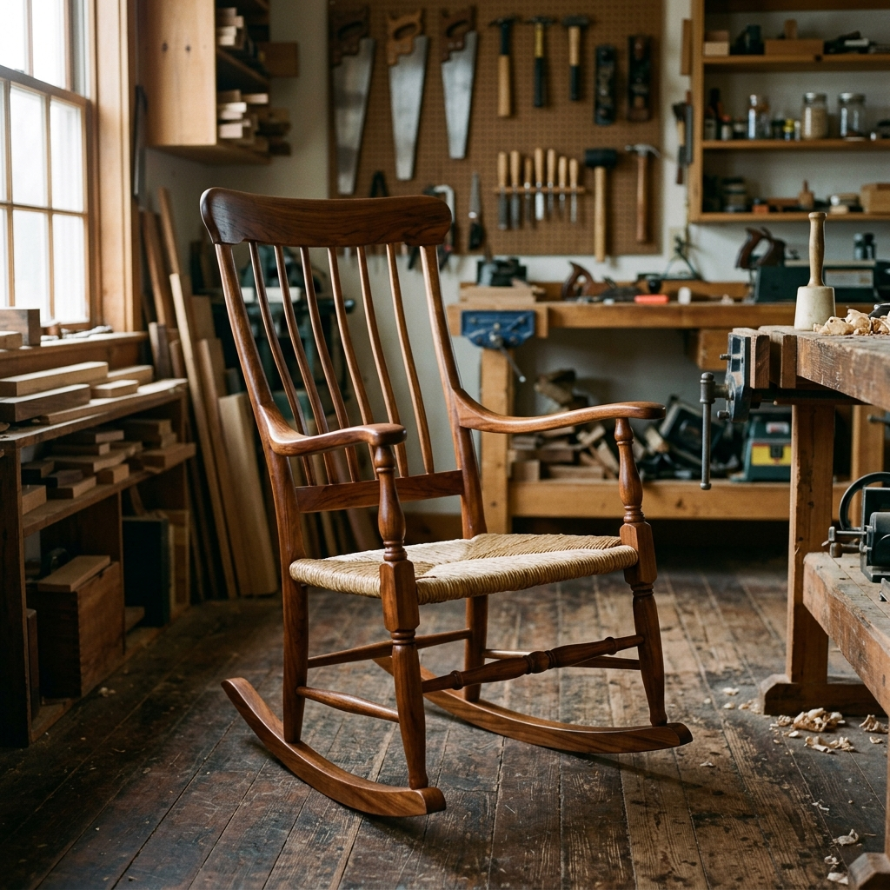
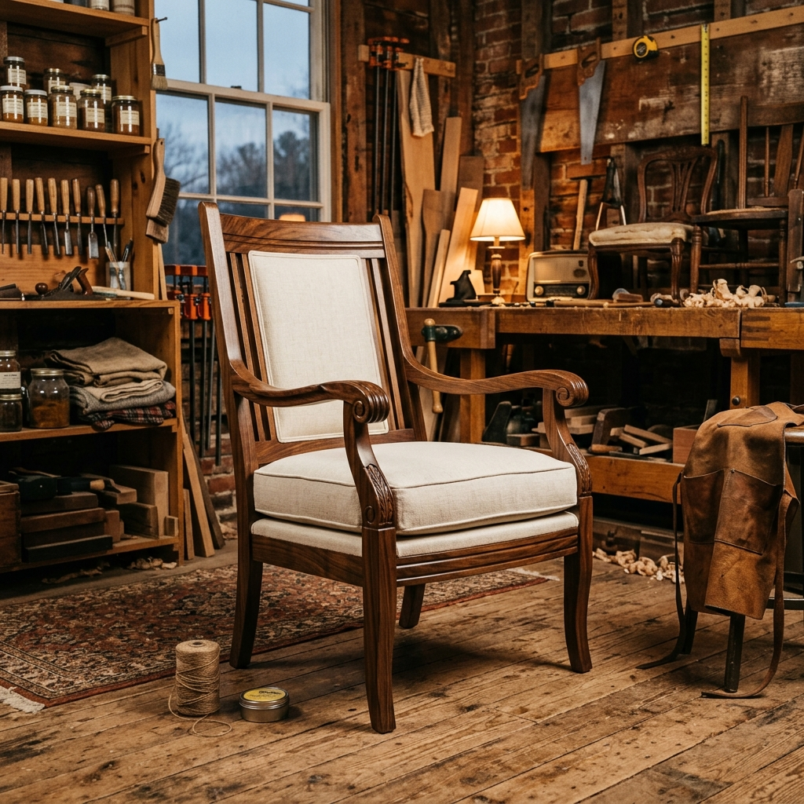

Breathe New Life Into Beloved Furniture
From weathered antiques to cherished heirlooms, our master craftsmen restore every piece with precision, passion, and timeless technique.

Expert Repair for Every Furniture Type
Three specialist streams, one uncompromising standard of craft.

Wood Restoration
Scratches, splits, loose joints, stripped finishes — we restore structural integrity and surface beauty using traditional hand techniques.
5–10 days
Upholstery & Fabric
Complete re-upholstery, foam replacement, button tufting, piping, and fabric sourcing for sofas, armchairs, and dining chairs.
7–14 days
Antique Specialist
Museum-grade conservation for period pieces — marquetry, gilding, patina matching, and hardware restoration respecting original character.
10–21 days
25 Years of Crafting Stories Into Wood
Founded in 1999 by master cabinetmaker Thomas Wren, Artisan Restore grew from a small East London workshop into the city's most trusted furniture restoration studio.
Every piece that enters our workshop is treated as an object of cultural significance — examined, documented, and restored using the same hand tools and period-appropriate materials used by its original makers.
Meet Our Team
Our Work Gallery
Every restoration tells a story of renewal — explore our recent work.






Trusted by London's Furniture Lovers
Real reviews from real clients whose heirlooms found new life in our workshop.
"They restored my grandmother's Victorian armchair to museum quality. I cried when I saw it — it looks better than it did in old photographs. Truly exceptional work."

"Our 18th-century mahogany desk was in a sorry state. Artisan Restore returned it in 12 days, fully structurally sound, with a hand-rubbed finish that glows. Worth every penny."

"The upholstery team sourced the exact period-correct fabric for our Chesterfield. Free collection, kept us updated throughout, and delivered on time. Highly recommend."

Trusted By the Industry's Best
Our craftsmanship has been recognised by the UK's most respected heritage institutions and design publications.
"Artisan Restore sets the gold standard for heritage furniture conservation in Britain."
"A remarkable workshop keeping centuries-old craft alive in the heart of London."
"The go-to restoration studio for discerning homeowners who value authenticity."
"Approved conservation supplier — trusted for museum-grade antique restoration."
"Fellows of the Guild — the highest professional accreditation in the UK."
"London's finest craftsmen restoring furniture with passion and precision."
Your Furniture Deserves
a Second Life
Every piece that enters our workshop is treated as an object of cultural significance. Get a free, no-obligation quote within 48 hours.
Quick Enquiry
Tell us about your piece and we'll respond within 2 hours.